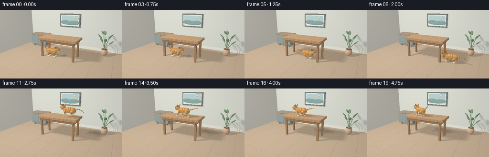
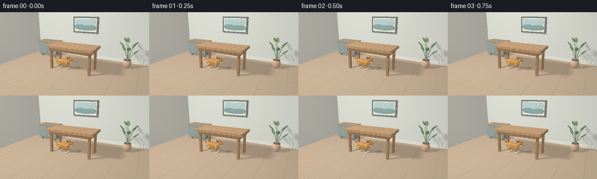
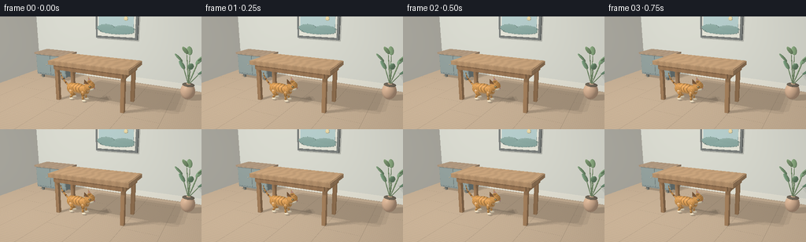
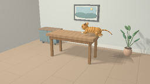
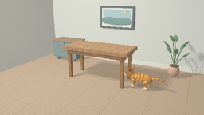
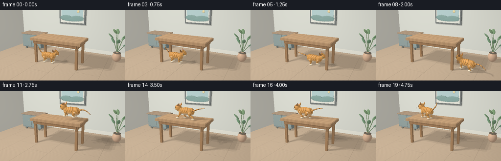

CODING AGENTS AS PIXEL WORLD MODELS
traex/GPT-6.1-Sol · dynamic_spatial_relationship_0014
点击播放 · 原生 RGB 像素
逐轮保存的候选
回放视频、检查图与代码变化。
每份候选均可单独播放。实际图片检查记录在下方工具轨迹中。
候选 01播放与检查图
点击播放 · 原生 RGB 像素


展开代码变化
--- 上一保存版本
+++ 本次保存版本
@@ -0,0 +1,275 @@
+import math, json
+from pathlib import Path
+import numpy as np
+from PIL import Image
+import artifact_io
+
+ROOT=Path(__file__).resolve().parent
+W,H=512,288
+rng=np.random.default_rng(5)
+V=lambda v:np.array(v,dtype=np.float32)
+
+def unit(v):
+ return v/np.maximum(np.linalg.norm(v,axis=-1,keepdims=True),1e-9)
+
+# A small, purpose-built analytic renderer: no external rendering engine.
+class Shape:
+ def __init__(self,kind,pos,scale,col,rot=None,material='',tri=None):
+ self.kind=kind;self.pos=V(pos);self.scale=V(scale);self.col=V(col);self.rot=np.eye(3,dtype=np.float32) if rot is None else rot;self.material=material;self.tri=tri
+ def hit(self,o,d):
+ oo=(o-self.pos)@self.rot; dd=d@self.rot
+ if self.kind=='ell':
+ q=oo/self.scale; v=dd/self.scale
+ a=np.sum(v*v,axis=-1);b=np.sum(q*v,axis=-1);c=np.sum(q*q,axis=-1)-1
+ disc=b*b-a*c
+ t=(-b-np.sqrt(np.maximum(disc,0)))/a
+ t=np.where((disc>=0)&(t>0.0002),t,np.inf)
+ elif self.kind=='box':
+ v=np.where(abs(dd)<1e-9,1e-9,dd)
+ t1=(-self.scale-oo)/v;t2=(self.scale-oo)/v
+ near=np.max(np.minimum(t1,t2),axis=-1);far=np.min(np.maximum(t1,t2),axis=-1)
+ t=np.where((near<far)&(far>0.0002),np.where(near>0.0002,near,far),np.inf)
+ elif self.kind=='tri':
+ a,b,c=self.tri;e1=b-a;e2=c-a
+ p=np.cross(d,e2);det=np.sum(e1*p,axis=-1);iv=1/np.where(abs(det)<1e-9,1e-9,det)
+ q=o-a;u=np.sum(q*p,axis=-1)*iv;qq=np.cross(q,e1);v=np.sum(d*qq,axis=-1)*iv
+ t=np.sum(e2*qq,axis=-1)*iv
+ t=np.where((abs(det)>1e-8)&(u>=0)&(v>=0)&(u+v<=1)&(t>.0002),t,np.inf)
+ return t
+ def surface(self,p):
+ q=(p-self.pos)@self.rot
+ if self.kind=='ell':n=unit(q/(self.scale*self.scale))@self.rot.T
+ elif self.kind=='box':
+ a=np.argmax(abs(q/self.scale),axis=-1);n=np.zeros_like(q);n[np.arange(len(q)),a]=np.sign(q[np.arange(len(q)),a]);n=n@self.rot.T
+ else:
+ nn=unit(np.cross(self.tri[1]-self.tri[0],self.tri[2]-self.tri[0]));n=np.broadcast_to(nn,p.shape).copy()
+ n=np.where(np.sum(n*(eye-p),axis=-1)[:,None]<0,-n,n)
+ color=np.broadcast_to(self.col,p.shape).copy()
+ if self.material=='wood':
+ grain=np.sin(p[:,0]*18+np.sin(p[:,1]*9)*.75+np.sin(p[:,0]*3+p[:,1]*4)*1.5)
+ fine=np.sin(p[:,0]*110+p[:,1]*6)*np.sin(p[:,1]*27)*.02
+ color*= (0.94+.06*grain+fine)[:,None]
+ if self.material=='floor':
+ seam=(np.mod(p[:,0]+8,1.35)<.018)|(np.mod(p[:,1]+(np.floor((p[:,0]+8)/1.35)%3)*.76,2.7)<.012)
+ g=.97+.035*np.sin(p[:,1]*65+np.sin(p[:,0]*2)*3)+.015*np.sin(p[:,1]*211)
+ color*=g[:,None];color[seam]*=.78
+ if self.material in ('fur','face','tail'):
+ a=q/self.scale
+ if self.material=='fur':
+ wave=np.sin(a[:,0]*21+np.sin(a[:,2]*4)*1.7+np.sin(a[:,1]*4)*.8)
+ band=np.clip((wave-.60)*4,0,1)*np.clip((a[:,2]+.45)*3,0,1)
+ color=color*(1-band[:,None]*.53)
+ belly=np.clip((-a[:,2]-.3)*2,0,1)
+ color=color*(1-belly[:,None]*.65)+V([.91,.79,.58])*belly[:,None]*.65
+ elif self.material=='face':
+ wave=np.sin(a[:,2]*26+abs(a[:,1])*8)
+ band=np.clip((wave-.68)*4,0,1)*np.clip((a[:,2]+.1)*3,0,1)
+ color*=1-band[:,None]*.5
+ else:
+ band=np.clip((np.sin(a[:,2]*9)-.4)*2,0,1)
+ color*=1-band[:,None]*.45
+ fine=np.sin(p[:,0]*290+p[:,2]*310)*np.sin(p[:,1]*330-p[:,2]*130)
+ color*= (1+.025*fine)[:,None]
+ return n,color
+
+scene=[]
+def ell(pos,sc,col,rot=None,mat='',arr=None):
+ obj=Shape('ell',pos,sc,col,rot,mat);(scene if arr is None else arr).append(obj);return obj
+
+def box(pos,sc,col,mat='',arr=None):
+ obj=Shape('box',pos,sc,col,material=mat);(scene if arr is None else arr).append(obj);return obj
+
+def triangle(a,b,c,col,arr):
+ arr.append(Shape('tri',(0,0,0),(1,1,1),col,tri=V([a,b,c])))
+
+def segment(a,b,r,col,arr,mat='',r2=None):
+ a,b=V(a),V(b);z=unit(b-a);v=V([0,0,1]) if abs(z[2])<.92 else V([0,1,0]);x=unit(np.cross(v,z));y=np.cross(z,x)
+ return ell((a+b)/2,(r,r if r2 is None else r2,np.linalg.norm(b-a)/2+r*.6),col,np.stack([x,y,z],axis=1),mat,arr)
+
+# Quiet sunlit dining-room setting.
+box((0,0,-.11),(12,12,.1),(.64,.49,.34),'floor')
+box((0,3.1,2.7),(12,.10,2.8),(.79,.80,.72))
+box((0,2.98,.13),(12,.045,.13),(.91,.89,.78))
+box((-5.4,0,2.7),(.12,7,2.8),(.81,.79,.70))
+# Simple framed landscape, well behind the action.
+box((-.3,2.96,2.8),(1.10,.075,.67),(.23,.25,.24),'wood')
+box((-.3,2.875,2.8),(.99,.02,.56),(.88,.88,.78))
+box((-.3,2.848,2.9),(.90,.008,.38),(.53,.70,.69))
+for x,z,sx,sz in [(-.8,2.64,.47,.19),(.12,2.62,.54,.18),(-.25,2.51,.88,.14)]:
+ ell((x,2.83,z),(sx,.012,sz),(.29,.45,.41))
+ell((.22,2.825,3.13),(.105,.007,.105),(.94,.79,.44))
+# Low sideboard to left.
+box((-3.35,2.05,.73),(.91,.47,.55),(.33,.40,.39),'wood')
+box((-3.35,2.05,1.31),(.97,.53,.045),(.55,.40,.27),'wood')
+for x in [-4.0,-2.7]:
+ for y in [1.72,2.34]:box((x,y,.18),(.055,.055,.18),(.25,.27,.24))
+for x in [-3.8,-2.9]:
+ box((x,1.566,.75),(.43,.012,.48),(.36,.44,.42))
+ ell((x+.2,1.54,.76),(.022,.025,.022),(.77,.64,.38))
+# A tall potted plant at the right rear.
+ell((3.35,1.85,.33),(.29,.29,.34),(.72,.48,.32))
+ell((3.35,1.85,.61),(.24,.24,.045),(.18,.15,.11))
+for j in range(8):
+ angle=j*2.4;start=V([3.35,1.85,.61]);end=V([3.35+.36*np.cos(angle),1.85+.28*np.sin(angle),1.13+j*.12])
+ segment(start,end,.018,(.24,.36,.19),scene)
+ tip=end+V([.23*np.cos(angle),.18*np.sin(angle),.21])
+ segment(end,tip,.11,(.20+j*.012,.37+j*.01,.23),scene,r2=.045)
+# Main table: open space below, four legs, substantial bevelled wooden top.
+wood=(.54,.31,.15)
+for x in [-1.40,1.40]:
+ for y in [-.51,.61]:
+ box((x,y,.79),(.073,.073,.79),wood,'wood')
+box((0,.05,1.58),(1.66,.79,.075),(.65,.40,.21),'wood')
+box((0,-.64,1.44),(1.43,.055,.115),(.48,.27,.13),'wood')
+box((0,.68,1.44),(1.43,.055,.115),wood,'wood')
+for x in [-1.47,1.47]:box((x,.05,1.44),(.05,.64,.115),wood,'wood')
+# Narrow bevel catches soft light around the tabletop.
+box((0,.05,1.66),(1.62,.755,.013),(.69,.44,.24),'wood')
+
+# Camera is fixed throughout the shot.
+eye=V([4.1,-7.9,3.8]);target=V([.12,.05,1.10]);forward=unit(target-eye);right=unit(np.cross(forward,V([0,0,1])));up=np.cross(right,forward)
+y,x=np.mgrid[0:H,0:W];f=H/(2*math.tan(math.radians(34)/2))
+dirs=unit(forward+((x-W/2+.5)/f)[...,None]*right-((y-H/2+.5)/f)[...,None]*up).reshape(-1,3).astype(np.float32)
+light=V([-3.5,-4.5,7]);Ld=unit(light-target)
+
+def trace(shapes,o,d):
+ depth=np.full(len(d),np.inf,np.float32);ids=np.full(len(d),-1,np.int32)
+ for i,s in enumerate(shapes):
+ t=s.hit(o,d);sel=t<depth;depth[sel]=t[sel];ids[sel]=i
+ return depth,ids
+
+def shadow(p,n,shapes,soft=False):
+ occ=np.zeros(len(p),np.float32)
+ offsets=[(0,0,0)] if not soft else [(-.50,-.35,0),(.5,-.35,0),(0,.55,0)]
+ for offset in offsets:
+ ld=unit(light+V(offset)-p);length=np.linalg.norm(light+V(offset)-p,axis=-1)
+ blocked=np.zeros(len(p),bool);start=p+n*.007
+ for s in shapes:
+ t=s.hit(start,ld);blocked|=t<length
+ occ+=blocked/len(offsets)
+ return 1-.70*occ
+
+def shading(p,n,c,shapes,do_shadow=True):
+ ld=unit(light-p);lam=np.maximum(np.sum(n*ld,axis=-1),0)
+ sh=shadow(p,n,shapes,True) if do_shadow else np.ones(len(p))
+ ambient=.36+.11*np.maximum(n[:,2],0)+.055*np.maximum(-n[:,1],0)
+ diffuse=lam*.59*sh
+ view=unit(eye-p);half=unit(ld+view);spec=np.maximum(np.sum(n*half,axis=-1),0)**40*.065*sh
+ rgb=c*(ambient+diffuse)[:,None]+spec[:,None]*V([1,.90,.76])
+ return rgb
+
+print('Rendering static room...',flush=True)
+bgdepth,bgids=trace(scene,eye,dirs);bgp=eye+dirs*bgdepth[:,None]
+bgn=np.zeros_like(bgp);bgc=np.zeros_like(bgp)
+for i,s in enumerate(scene):
+ sel=bgids==i
+ if np.any(sel):bgn[sel],bgc[sel]=s.surface(bgp[sel])
+bgrgb=shading(bgp,bgn,bgc,scene)
+
+orange=(.88,.43,.115);cream=(.96,.83,.61);dark=(.32,.16,.065)
+def cat(frame):
+ if frame<4:
+ px=-.60+.055*frame;z=0;heading=0;gait=frame*.30;run=False;jump=False
+ elif frame<=7:
+ px=[-.16,.50,1.26,2.12][frame-4];z=0;heading=0;gait=(frame-4)*1.9;run=True;jump=False
+ elif frame<=12:
+ s=(frame-8)/4;px=2.15-1.49*(s*s*(3-2*s));z=1.68*s+.75*math.sin(math.pi*s);heading=math.pi;gait=0;run=False;jump=True
+ elif frame<=17:
+ px=.66-(frame-12)*.22;z=1.68;heading=math.pi;gait=(frame-12)*1.95;run=True;jump=False
+ else:
+ px=-.44;z=1.68;heading=math.pi-.18*(frame-17);gait=0;run=False;jump=False
+ py=-.20
+ R=V([[math.cos(heading),-math.sin(heading),0],[math.sin(heading),math.cos(heading),0],[0,0,1]])
+ lift=.022*math.sin(gait*2) if run else .008*math.sin(frame*.5)
+ origin=V([px,py,z+lift])
+ arr=[]
+ def p(a):return origin+V(a)@R.T
+ def e(a,sc,col,mat='fur',rot=None):return ell(p(a),sc,col,R if rot is None else R@rot,mat,arr)
+ def seg(a,b,r,col=orange,mat='fur',r2=None):return segment(p(a),p(b),r,col,arr,mat,r2)
+ # Supple torso, shoulders and hips, with a darker striped back.
+ e((-.05,0,.48),(.46,.187,.225),orange)
+ e((-.33,0,.46),(.235,.181,.235),orange)
+ e((.28,0,.47),(.17,.178,.219),orange)
+ # Four articulated legs with individual stride phases and rounded paws.
+ for side in [-1,1]:
+ for front in [False,True]:
+ ax=.27 if front else -.32; yy=side*.126
+ if jump:
+ s=(frame-8)/4
+ if s<.52:
+ footx=ax+(.29 if front else -.23)*math.sin(math.pi*s)
+ footz=.11+(.19 if front else .10)*math.sin(math.pi*s)
+ else:
+ footx=ax+.06;footz=.035+.16*math.sin(math.pi*s)
+ elif run:
+ phase=gait+(0 if front else math.pi)+(0 if side==-1 else math.pi*.75)
+ footx=ax+.22*math.cos(phase);footz=.055+.14*max(0,math.sin(phase))
+ else:footx=ax;footz=.052
+ hip=(ax,yy,.47 if front else .43)
+ knee=((ax+footx)/2+(-.035 if front else .09),yy,.24+footz*.25)
+ ankle=(footx-.03,yy,footz+.055)
+ seg(hip,knee,.074 if front else .094)
+ seg(knee,ankle,.047)
+ e((footx+.016,yy,footz),(.091,.060,.044),cream,mat='')
+ # Slight head-leading posture, familiar triangular feline silhouette.
+ he=.68+(.015*math.sin(frame*.5) if not run else -.025)
+ e((.38,0,.59),(.135,.14,.175),orange)
+ e((.49,0,he),(.211,.181,.192),orange,'face')
+ e((.59,-.056,he-.088),(.115,.089,.072),cream,'')
+ e((.59,.056,he-.088),(.115,.089,.072),cream,'')
+ # Tall pointed ears; pink inset on the forward-facing triangles.
+ for side in [-1,1]:
+ a=(.37,side*.060,he+.125);b=(.54,side*.143,he+.122);c=(.34,side*.164,he+.31);d=(.33,side*.172,he+.12)
+ for v in [(a,b,c),(b,d,c),(d,a,c),(a,d,b)]:triangle(*[p(t) for t in v],orange if v!=(b,d,c) else dark,arr)
+ ia=V(a)*.65+V(c)*.35;ib=V(b)*.69+V(c)*.31;ic=V(c)*.84+(V(a)+V(b))*.08
+ ia[0]+=.008;ib[0]+=.008;ic[0]+=.008
+ triangle(p(ia),p(ib),p(ic),(.75,.41,.34),arr)
+ # Amber-green irises, fine dark rims and vertically slit pupils.
+ for side in [-1,1]:
+ e((.572,side*.145,he+.027),(.062,.038,.048),dark,'')
+ e((.579,side*.160,he+.030),(.043,.024,.033),(.64,.73,.26),'')
+ e((.590,side*.178,he+.032),(.011,.012,.028),(.055,.063,.040),'')
+ e((.594,side*.187,he+.043),(.008,.006,.009),(.99,.98,.87),'')
+ e((.698,0,he-.058),(.023,.039,.024),(.63,.27,.25),'')
+ seg((.7,0,he-.075),(.685,0,he-.106),.006,dark,mat='')
+ for side in [-1,1]:
+ seg((.684,0,he-.105),(.66,side*.044,he-.112),.004,dark,mat='')
+ for k in range(3):
+ seg((.624,side*.084,he-.076-k*.022),(.63-k*.04,side*(.30+.025*k),he-.045-k*.033),.0028,(.92,.86,.72),mat='')
+ # Curved, ringed tail follows the torso, with balance in the leap.
+ points=[]
+ for j in range(14):
+ t=j/13
+ if run:pp=(-.46-.72*t,.02+.07*math.sin(t*3+frame*.55),.50+.12*math.sin(t*2.1)+.09*t)
+ elif jump:pp=(-.46-.72*t,.035*math.sin(t*3),.51+.16*math.sin(t*3)-.17*t)
+ else:pp=(-.46-.43*math.sin(t*1.7),.045*math.sin(t*2+frame*.12),.51+.54*t)
+ points.append(pp)
+ for j in range(13):seg(points[j],points[j+1],.045*(1-j/19),orange if j%3 else dark,mat='')
+ return arr
+
+frames=[]
+for fi in range(20):
+ kitty=cat(fi)
+ cd,ci=trace(kitty,eye,dirs)
+ visible=cd<bgdepth
+ rgb=bgrgb.copy()
+ # Dynamic soft shadow on the room and table, from all moving cat parts.
+ shadow_sel=(bgn[:,2]>.65)&(np.linalg.norm(bgp[:,:2]-V([0,0]),axis=-1)<4)
+ ix=np.flatnonzero(shadow_sel)
+ sh=shadow(bgp[ix],bgn[ix],kitty,True)
+ rgb[ix]*=(.49+.51*sh)[:,None]
+ ix=np.flatnonzero(visible);p=eye+dirs[ix]*cd[ix,None];n=np.zeros_like(p);c=np.zeros_like(p)
+ for j,s in enumerate(kitty):
+ sel=ci[ix]==j
+ if np.any(sel):n[sel],c[sel]=s.surface(p[sel])
+ rgb[ix]=shading(p,n,c,scene+kitty)
+ # Subtle photographic vignette and gentle display gamma.
+ rgb=rgb.reshape(H,W,3)
+ xx=(x-W/2)/(W/2);yy=(y-H/2)/(H/2)
+ rgb*= (1-.045*(xx*xx+yy*yy))[...,None]
+ rgb=np.clip(rgb,0,1)**(1/2.2)
+ image=Image.fromarray(np.uint8(np.clip(rgb*255,0,255))).resize((256,144),Image.Resampling.LANCZOS)
+ frames.append(np.asarray(image))
+ print('Frame',fi,'complete',flush=True)
+artifact_io.save(np.stack(frames),ROOT)
+print('Saved 20 RGB frames.',flush=True)
候选 02播放与检查图
点击播放 · 原生 RGB 像素


展开代码变化
--- 上一保存版本
+++ 本次保存版本
@@ -127,8 +127,8 @@
box((0,.05,1.66),(1.62,.755,.013),(.69,.44,.24),'wood')
# Camera is fixed throughout the shot.
-eye=V([4.1,-7.9,3.8]);target=V([.12,.05,1.10]);forward=unit(target-eye);right=unit(np.cross(forward,V([0,0,1])));up=np.cross(right,forward)
-y,x=np.mgrid[0:H,0:W];f=H/(2*math.tan(math.radians(34)/2))
+eye=V([4.1,-7.9,3.8]);target=V([.25,.05,1.20]);forward=unit(target-eye);right=unit(np.cross(forward,V([0,0,1])));up=np.cross(right,forward)
+y,x=np.mgrid[0:H,0:W];f=H/(2*math.tan(math.radians(27)/2))
dirs=unit(forward+((x-W/2+.5)/f)[...,None]*right-((y-H/2+.5)/f)[...,None]*up).reshape(-1,3).astype(np.float32)
light=V([-3.5,-4.5,7]);Ld=unit(light-target)
@@ -171,9 +171,9 @@
if frame<4:
px=-.60+.055*frame;z=0;heading=0;gait=frame*.30;run=False;jump=False
elif frame<=7:
- px=[-.16,.50,1.26,2.12][frame-4];z=0;heading=0;gait=(frame-4)*1.9;run=True;jump=False
+ px=[-.16,.50,1.26,2.02][frame-4];z=0;heading=0 if frame<7 else .65;gait=(frame-4)*1.9;run=True;jump=False
elif frame<=12:
- s=(frame-8)/4;px=2.15-1.49*(s*s*(3-2*s));z=1.68*s+.75*math.sin(math.pi*s);heading=math.pi;gait=0;run=False;jump=True
+ s=(frame-8)/4;px=2.15-1.49*(s*s*(3-2*s));z=1.68*s+.75*math.sin(math.pi*s);heading=math.pi-.25*(1-s);gait=0;run=False;jump=True
elif frame<=17:
px=.66-(frame-12)*.22;z=1.68;heading=math.pi;gait=(frame-12)*1.95;run=True;jump=False
else:
可观测工具轨迹
实际执行的命令与返回图片。
命令 1exit 0
/bin/bash -lc 'ls -la && cat prompt.txt && cat GENERATION_RULES.md && cat task_spec.json'
命令 2exit 0
/bin/bash -lc "cat artifact_io.py && python - <<'PY' import importlib.util for m in ['numpy','PIL','scipy']: print(m, bool(importlib.util.find_spec(m))) PY"
命令 3exit 0
/bin/bash -lc "cat > generate.py <<'PY'
import math, json
from pathlib import Path
import numpy as np
from PIL import Image
import artifact_io
ROOT=Path(__file__).resolve().parent
W,H=512,288
rng=np.random.default_rng(5)
V=lambda v:np.array(v,dtype=np.float32)
def unit(v):
return v/np.maximum(np.linalg.norm(v,axis=-1,keepdims=True),1e-9)
# A small, purpose-built analytic renderer: no external rendering engine.
class Shape:
def __init__(self,kind,pos,scale,col,rot=None,material='',tri=None):
self.kind=kind;self.pos=V(pos);self.scale=V(scale);self.col=V(col);self.rot=np.eye(3,dtype=np.float32) if rot is None else rot;self.material=material;self.tri=tri
def hit(self,o,d):
oo=(o-self.pos)@self.rot; dd=d@self.rot
if self.kind=='ell':
q=oo/self.scale; v=dd/self.scale
a=np.sum(v*v,axis=-1);b=np.sum(q*v,axis=-1);c=np.sum(q*q,axis=-1)-1
disc=b*b-a*c
t=(-b-np.sqrt(np.maximum(disc,0)))/a
t=np.where((disc>=0)&(t>0.0002),t,np.inf)
elif self.kind=='box':
v=np.where(abs(dd)<1e-9,1e-9,dd)
t1=(-self.scale-oo)/v;t2=(self.scale-oo)/v
near=np.max(np.minimum(t1,t2),axis=-1);far=np.min(np.maximum(t1,t2),axis=-1)
t=np.where((near<far)&(far>0.0002),np.where(near>0.0002,near,far),np.inf)
elif self.kind=='tri':
a,b,c=self.tri;e1=b-a;e2=c-a
p=np.cross(d,e2);det=np.sum(e1*p,axis=-1);iv=1/np.where(abs(det)<1e-9,1e-9,det)
q=o-a;u=np.sum(q*p,axis=-1)*iv;qq=np.cross(q,e1);v=np.sum(d*qq,axis=-1)*iv
t=np.sum(e2*qq,axis=-1)*iv
t=np.where((abs(det)>1e-8)&(u>=0)&(v>=0)&(u+v<=1)&(t>.0002),t,np.inf)
return t
def surface(self,p):
q=(p-self.pos)@self.rot
if self.kind=='ell':n=unit(q/(self.scale*self.scale))@self.rot.T
elif self.kind=='box':
a=np.argmax(abs(q/self.scale),axis=-1);n=np.zeros_like(q);n[np.arange(len(q)),a]=np.sign(q[np.arange(len(q)),a]);n=n@self.rot.T
else:
nn=unit(np.cross(self.tri[1]-self.tri[0],self.tri[2]-self.tri[0]));n=np.broadcast_to(nn,p.shape).copy()
n=np.where(np.sum(n*(eye-p),axis=-1)[:,None]<0,-n,n)
color=np.broadcast_to(self.col,p.shape).copy()
if self.material=='wood':
grain=np.sin(p[:,0]*18+np.sin(p[:,1]*9)*.75+np.sin(p[:,0]*3+p[:,1]*4)*1.5)
fine=np.sin(p[:,0]*110+p[:,1]*6)*np.sin(p[:,1]*27)*.02
color*= (0.94+.06*grain+fine)[:,None]
if self.material=='floor':
seam=(np.mod(p[:,0]+8,1.35)<.018)|(np.mod(p[:,1]+(np.floor((p[:,0]+8)/1.35)%3)*.76,2.7)<.012)
g=.97+.035*np.sin(p[:,1]*65+np.sin(p[:,0]*2)*3)+.015*np.sin(p[:,1]*211)
color*=g[:,None];color[seam]*=.78
if self.material in ('fur','face','tail'):
a=q/self.scale
if self.material=='fur':
wave=np.sin(a[:,0]*21+np.sin(a[:,2]*4)*1.7+np.sin(a[:,1]*4)*.8)
band=np.clip((wave-.60)*4,0,1)*np.clip((a[:,2]+.45)*3,0,1)
color=color*(1-band[:,None]*.53)
belly=np.clip((-a[:,2]-.3)*2,0,1)
color=color*(1-belly[:,None]*.65)+V([.91,.79,.58])*belly[:,None]*.65
elif self.material=='face':
wave=np.sin(a[:,2]*26+abs(a[:,1])*8)
band=np.clip((wave-.68)*4,0,1)*np.clip((a[:,2]+.1)*3,0,1)
color*=1-band[:,None]*.5
else:
band=np.clip((np.sin(a[:,2]*9)-.4)*2,0,1)
color*=1-band[:,None]*.45
fine=np.sin(p[:,0]*290+p[:,2]*310)*np.sin(p[:,1]*330-p[:,2]*130)
color*= (1+.025*fine)[:,None]
return n,color
scene=[]
def ell(pos,sc,col,rot=None,mat='',arr=None):
obj=Shape('ell',pos,sc,col,rot,mat);(scene if arr is None else arr).append(obj);return obj
def box(pos,sc,col,mat='',arr=None):
obj=Shape('box',pos,sc,col,material=mat);(scene if arr is None else arr).append(obj);return obj
def triangle(a,b,c,col,arr):
arr.append(Shape('tri',(0,0,0),(1,1,1),col,tri=V([a,b,c])))
def segment(a,b,r,col,arr,mat='',r2=None):
a,b=V(a),V(b);z=unit(b-a);v=V([0,0,1]) if abs(z[2])<.92 else V([0,1,0]);x=unit(np.cross(v,z));y=np.cross(z,x)
return ell((a+b)/2,(r,r if r2 is None else r2,np.linalg.norm(b-a)/2+r*.6),col,np.stack([x,y,z],axis=1),mat,arr)
# Quiet sunlit dining-room setting.
box((0,0,-.11),(12,12,.1),(.64,.49,.34),'floor')
box((0,3.1,2.7),(12,.10,2.8),(.79,.80,.72))
box((0,2.98,.13),(12,.045,.13),(.91,.89,.78))
box((-5.4,0,2.7),(.12,7,2.8),(.81,.79,.70))
# Simple framed landscape, well behind the action.
box((-.3,2.96,2.8),(1.10,.075,.67),(.23,.25,.24),'wood')
box((-.3,2.875,2.8),(.99,.02,.56),(.88,.88,.78))
box((-.3,2.848,2.9),(.90,.008,.38),(.53,.70,.69))
for x,z,sx,sz in [(-.8,2.64,.47,.19),(.12,2.62,.54,.18),(-.25,2.51,.88,.14)]:
ell((x,2.83,z),(sx,.012,sz),(.29,.45,.41))
ell((.22,2.825,3.13),(.105,.007,.105),(.94,.79,.44))
# Low sideboard to left.
box((-3.35,2.05,.73),(.91,.47,.55),(.33,.40,.39),'wood')
box((-3.35,2.05,1.31),(.97,.53,.045),(.55,.40,.27),'wood')
for x in [-4.0,-2.7]:
for y in [1.72,2.34]:box((x,y,.18),(.055,.055,.18),(.25,.27,.24))
for x in [-3.8,-2.9]:
box((x,1.566,.75),(.43,.012,.48),(.36,.44,.42))
ell((x+.2,1.54,.76),(.022,.025,.022),(.77,.64,.38))
# A tall potted plant at the right rear.
ell((3.35,1.85,.33),(.29,.29,.34),(.72,.48,.32))
ell((3.35,1.85,.61),(.24,.24,.045),(.18,.15,.11))
for j in range(8):
angle=j*2.4;start=V([3.35,1.85,.61]);end=V([3.35+.36*np.cos(angle),1.85+.28*np.sin(angle),1.13+j*.12])
segment(start,end,.018,(.24,.36,.19),scene)
tip=end+V([.23*np.cos(angle),.18*np.sin(angle),.21])
segment(end,tip,.11,(.20+j*.012,.37+j*.01,.23),scene,r2=.045)
# Main table: open space below, four legs, substantial bevelled wooden top.
wood=(.54,.31,.15)
for x in [-1.40,1.40]:
for y in [-.51,.61]:
box((x,y,.79),(.073,.073,.79),wood,'wood')
box((0,.05,1.58),(1.66,.79,.075),(.65,.40,.21),'wood')
box((0,-.64,1.44),(1.43,.055,.115),(.48,.27,.13),'wood')
box((0,.68,1.44),(1.43,.055,.115),wood,'wood')
for x in [-1.47,1.47]:box((x,.05,1.44),(.05,.64,.115),wood,'wood')
# Narrow bevel catches soft light around the tabletop.
box((0,.05,1.66),(1.62,.755,.013),(.69,.44,.24),'wood')
# Camera is fixed throughout the shot.
eye=V([4.1,-7.9,3.8]);target=V([.12,.05,1.10]);forward=unit(target-eye);right=unit(np.cross(forward,V([0,0,1])));up=np.cross(right,forward)
y,x=np.mgrid[0:H,0:W];f=H/(2*math.tan(math.radians(34)/2))
dirs=unit(forward+((x-W/2+.5)/f)[...,None]*right-((y-H/2+.5)/f)[...,None]*up).reshape(-1,3).astype(np.float32)
light=V([-3.5,-4.5,7]);Ld=unit(light-target)
def trace(shapes,o,d):
depth=np.full(len(d),np.inf,np.float32);ids=np.full(len(d),-1,np.int32)
for i,s in enumerate(shapes):
t=s.hit(o,d);sel=t<depth;depth[sel]=t[sel];ids[sel]=i
return depth,ids
def shadow(p,n,shapes,soft=False):
occ=np.zeros(len(p),np.float32)
offsets=[(0,0,0)] if not soft else [(-.50,-.35,0),(.5,-.35,0),(0,.55,0)]
for offset in offsets:
ld=unit(light+V(offset)-p);length=np.linalg.norm(light+V(offset)-p,axis=-1)
blocked=np.zeros(len(p),bool);start=p+n*.007
for s in shapes:
t=s.hit(start,ld);blocked|=t<length
occ+=blocked/len(offsets)
return 1-.70*occ
def shading(p,n,c,shapes,do_shadow=True):
ld=unit(light-p);lam=np.maximum(np.sum(n*ld,axis=-1),0)
sh=shadow(p,n,shapes,True) if do_shadow else np.ones(len(p))
ambient=.36+.11*np.maximum(n[:,2],0)+.055*np.maximum(-n[:,1],0)
diffuse=lam*.59*sh
view=unit(eye-p);half=unit(ld+view);spec=np.maximum(np.sum(n*half,axis=-1),0)**40*.065*sh
rgb=c*(ambient+diffuse)[:,None]+spec[:,None]*V([1,.90,.76])
return rgb
print('Rendering static room...',flush=True)
bgdepth,bgids=trace(scene,eye,dirs);bgp=eye+dirs*bgdepth[:,None]
bgn=np.zeros_like(bgp);bgc=np.zeros_like(bgp)
for i,s in enumerate(scene):
sel=bgids==i
if np.any(sel):bgn[sel],bgc[sel]=s.surface(bgp[sel])
bgrgb=shading(bgp,bgn,bgc,scene)
orange=(.88,.43,.115);cream=(.96,.83,.61);dark=(.32,.16,.065)
def cat(frame):
if frame<4:
px=-.60+.055*frame;z=0;heading=0;gait=frame*.30;run=False;jump=False
elif frame<=7:
px=[-.16,.50,1.26,2.12][frame-4];z=0;heading=0;gait=(frame-4)*1.9;run=True;jump=False
elif frame<=12:
s=(frame-8)/4;px=2.15-1.49*(s*s*(3-2*s));z=1.68*s+.75*math.sin(math.pi*s);heading=math.pi;gait=0;run=False;jump=True
elif frame<=17:
px=.66-(frame-12)*.22;z=1.68;heading=math.pi;gait=(frame-12)*1.95;run=True;jump=False
else:
px=-.44;z=1.68;heading=math.pi-.18*(frame-17);gait=0;run=False;jump=False
py=-.20
R=V([[math.cos(heading),-math.sin(heading),0],[math.sin(heading),math.cos(heading),0],[0,0,1]])
lift=.022*math.sin(gait*2) if run else .008*math.sin(frame*.5)
origin=V([px,py,z+lift])
arr=[]
def p(a):return origin+V(a)@R.T
def e(a,sc,col,mat='fur',rot=None):return ell(p(a),sc,col,R if rot is None else R@rot,mat,arr)
def seg(a,b,r,col=orange,mat='fur',r2=None):return segment(p(a),p(b),r,col,arr,mat,r2)
# Supple torso, shoulders and hips, with a darker striped back.
e((-.05,0,.48),(.46,.187,.225),orange)
e((-.33,0,.46),(.235,.181,.235),orange)
e((.28,0,.47),(.17,.178,.219),orange)
# Four articulated legs with individual stride phases and rounded paws.
for side in [-1,1]:
for front in [False,True]:
ax=.27 if front else -.32; yy=side*.126
if jump:
s=(frame-8)/4
if s<.52:
footx=ax+(.29 if front else -.23)*math.sin(math.pi*s)
footz=.11+(.19 if front else .10)*math.sin(math.pi*s)
else:
footx=ax+.06;footz=.035+.16*math.sin(math.pi*s)
elif run:
phase=gait+(0 if front else math.pi)+(0 if side==-1 else math.pi*.75)
footx=ax+.22*math.cos(phase);footz=.055+.14*max(0,math.sin(phase))
else:footx=ax;footz=.052
hip=(ax,yy,.47 if front else .43)
knee=((ax+footx)/2+(-.035 if front else .09),yy,.24+footz*.25)
ankle=(footx-.03,yy,footz+.055)
seg(hip,knee,.074 if front else .094)
seg(knee,ankle,.047)
e((footx+.016,yy,footz),(.091,.060,.044),cream,mat='')
# Slight head-leading posture, familiar triangular feline silhouette.
he=.68+(.015*math.sin(frame*.5) if not run else -.025)
e((.38,0,.59),(.135,.14,.175),orange)
e((.49,0,he),(.211,.181,.192),orange,'face')
e((.59,-.056,he-.088),(.115,.089,.072),cream,'')
e((.59,.056,he-.088),(.115,.089,.072),cream,'')
# Tall pointed ears; pink inset on the forward-facing triangles.
for side in [-1,1]:
a=(.37,side*.060,he+.125);b=(.54,side*.143,he+.122);c=(.34,side*.164,he+.31);d=(.33,side*.172,he+.12)
for v in [(a,b,c),(b,d,c),(d,a,c),(a,d,b)]:triangle(*[p(t) for t in v],orange if v"'!=(b,d,c) else dark,arr)
ia=V(a)*.65+V(c)*.35;ib=V(b)*.69+V(c)*.31;ic=V(c)*.84+(V(a)+V(b))*.08
ia[0]+=.008;ib[0]+=.008;ic[0]+=.008
triangle(p(ia),p(ib),p(ic),(.75,.41,.34),arr)
# Amber-green irises, fine dark rims and vertically slit pupils.
for side in [-1,1]:
e((.572,side*.145,he+.027),(.062,.038,.048),dark,'"'')
e((.579,side*.160,he+.030),(.043,.024,.033),(.64,.73,.26),'')
e((.590,side*.178,he+.032),(.011,.012,.028),(.055,.063,.040),'')
e((.594,side*.187,he+.043),(.008,.006,.009),(.99,.98,.87),'')
e((.698,0,he-.058),(.023,.039,.024),(.63,.27,.25),'')
seg((.7,0,he-.075),(.685,0,he-.106),.006,dark,mat='')
for side in [-1,1]:
seg((.684,0,he-.105),(.66,side*.044,he-.112),.004,dark,mat='')
for k in range(3):
seg((.624,side*.084,he-.076-k*.022),(.63-k*.04,side*(.30+.025*k),he-.045-k*.033),.0028,(.92,.86,.72),mat='')
# Curved, ringed tail follows the torso, with balance in the leap.
points=[]
for j in range(14):
t=j/13
if run:pp=(-.46-.72*t,.02+.07*math.sin(t*3+frame*.55),.50+.12*math.sin(t*2.1)+.09*t)
elif jump:pp=(-.46-.72*t,.035*math.sin(t*3),.51+.16*math.sin(t*3)-.17*t)
else:pp=(-.46-.43*math.sin(t*1.7),.045*math.sin(t*2+frame*.12),.51+.54*t)
points.append(pp)
for j in range(13):seg(points[j],points[j+1],.045*(1-j/19),orange if j%3 else dark,mat='')
return arr
frames=[]
for fi in range(20):
kitty=cat(fi)
cd,ci=trace(kitty,eye,dirs)
visible=cd<bgdepth
rgb=bgrgb.copy()
# Dynamic soft shadow on the room and table, from all moving cat parts.
shadow_sel=(bgn[:,2]>.65)&(np.linalg.norm(bgp[:,:2]-V([0,0]),axis=-1)<4)
ix=np.flatnonzero(shadow_sel)
sh=shadow(bgp[ix],bgn[ix],kitty,True)
rgb[ix]*=(.49+.51*sh)[:,None]
ix=np.flatnonzero(visible);p=eye+dirs[ix]*cd[ix,None];n=np.zeros_like(p);c=np.zeros_like(p)
for j,s in enumerate(kitty):
sel=ci[ix]==j
if np.any(sel):n[sel],c[sel]=s.surface(p[sel])
rgb[ix]=shading(p,n,c,scene+kitty)
# Subtle photographic vignette and gentle display gamma.
rgb=rgb.reshape(H,W,3)
xx=(x-W/2)/(W/2);yy=(y-H/2)/(H/2)
rgb*= (1-.045*(xx*xx+yy*yy))[...,None]
rgb=np.clip(rgb,0,1)**(1/2.2)
image=Image.fromarray(np.uint8(np.clip(rgb*255,0,255))).resize((256,144),Image.Resampling.LANCZOS)
frames.append(np.asarray(image))
print('Frame',fi,'complete',flush=True)
artifact_io.save(np.stack(frames),ROOT)
print('Saved 20 RGB frames.',flush=True)
PY
OPENBLAS_NUM_THREADS=1 python generate.py"命令 4exit 0
/bin/bash -lc 'command -v ffmpeg || true'
命令 5exit 0
/bin/bash -lc "python - <<'PY'
p='generate.py'
s=open(p).read().replace('target=V([.12,.05,1.10])','target=V([.25,.05,1.20])').replace('math.radians(34)','math.radians(27)')
s=s.replace('px=[-.16,.50,1.26,2.12][frame-4];z=0;heading=0;gait=(frame-4)*1.9;run=True;jump=False','px=[-.16,.50,1.26,2.02][frame-4];z=0;heading=0 if frame<7 else .65;gait=(frame-4)*1.9;run=True;jump=False')
s=s.replace('heading=math.pi;gait=0;run=False;jump=True','heading=math.pi-.25*(1-s);gait=0;run=False;jump=True')
open(p,'w').write(s)
PY
OPENBLAS_NUM_THREADS=1 python generate.py"命令 6exit 0
/bin/bash -lc "python - <<'PY'
import numpy as np
from pathlib import Path
from PIL import Image
p=Path('.')
a=np.load(p/'pixels.npz')['pixels']
assert a.shape==(144,256,20)
assert len(list((p/'frames').glob('*.png')))==20
assert all(Image.open(f).mode=='RGB' and Image.open(f).size==(256,144) for f in (p/'frames').glob('*.png'))
assert (p/'index.html').is_file() and (p/'generate.py').is_file()
print('Verified: 20 RGB frames, 256Ã144, 4 fps; required artifacts present.')
PY"视觉工具实际返回图片 1

视觉工具实际返回图片 2

视觉工具实际返回图片 3

视觉工具实际返回图片 4

保存候选 2 份；完成命令 6 次；可验证图片返回 4 张。原始 API 响应与完整日志保留在本地。